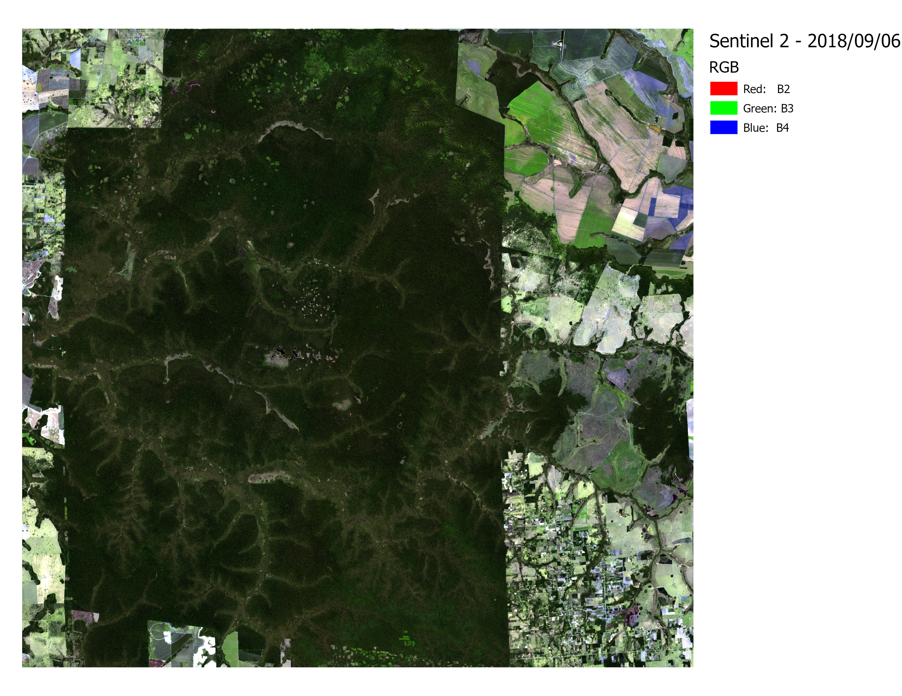
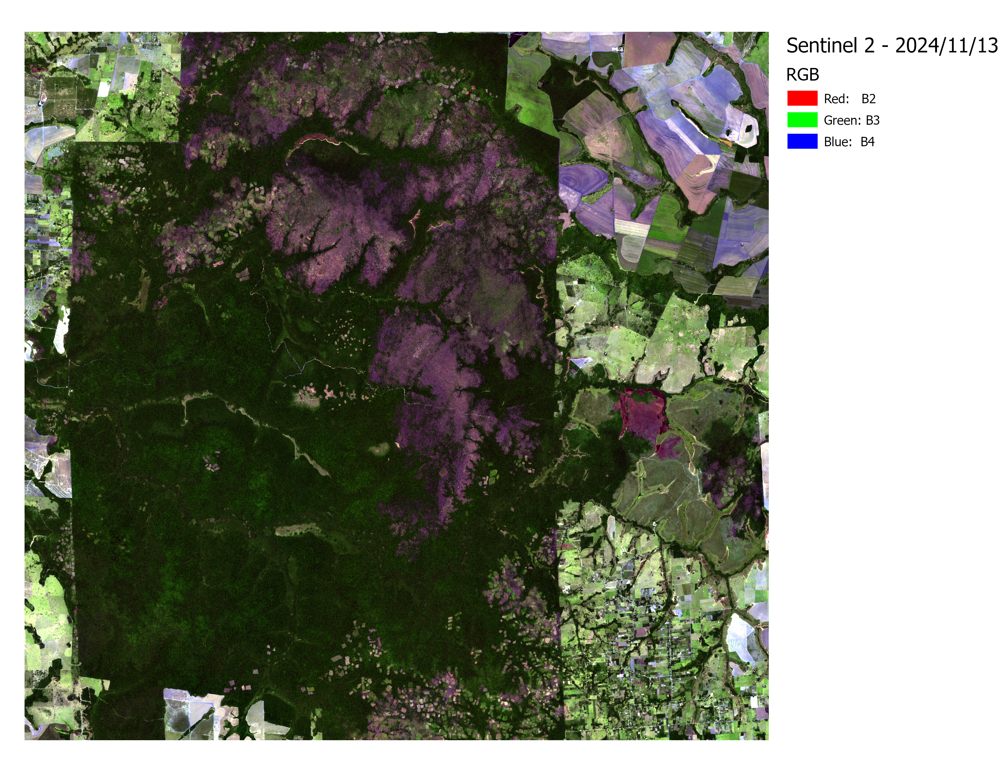
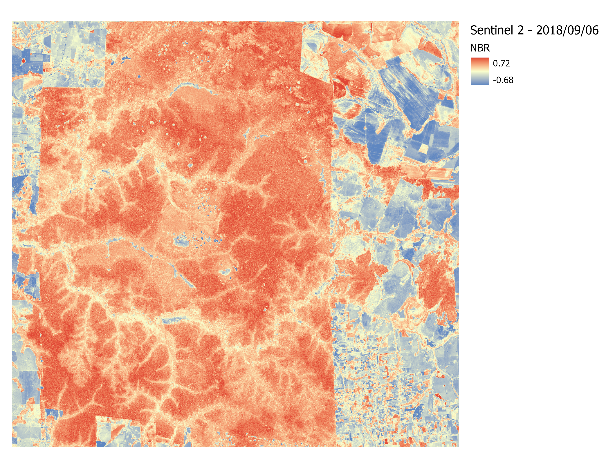
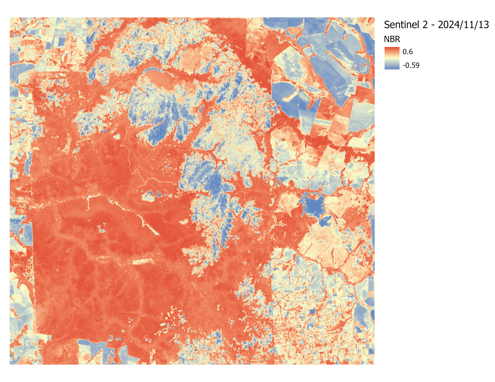
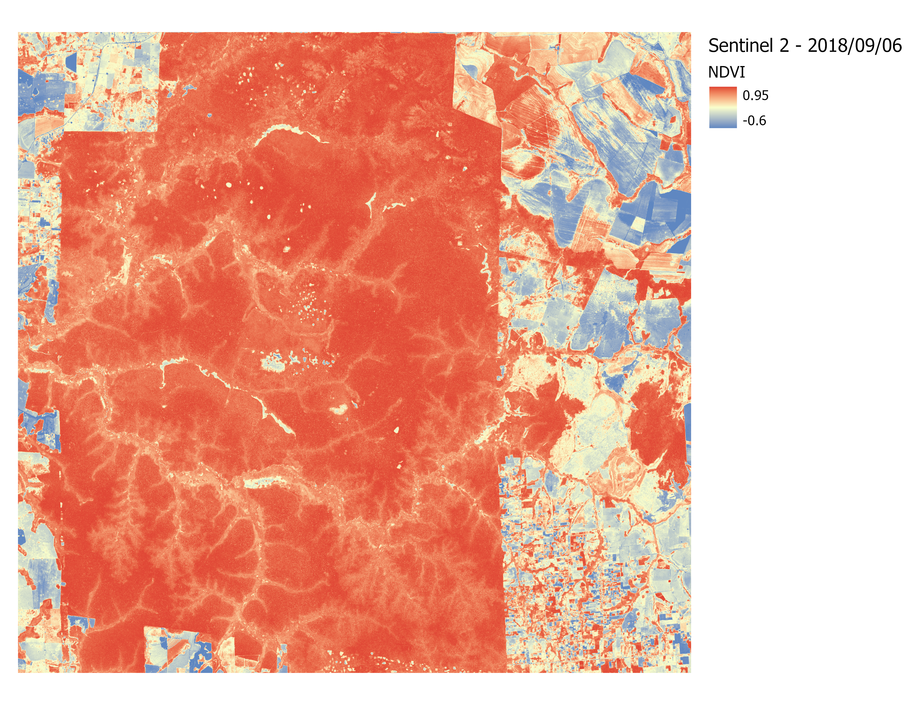
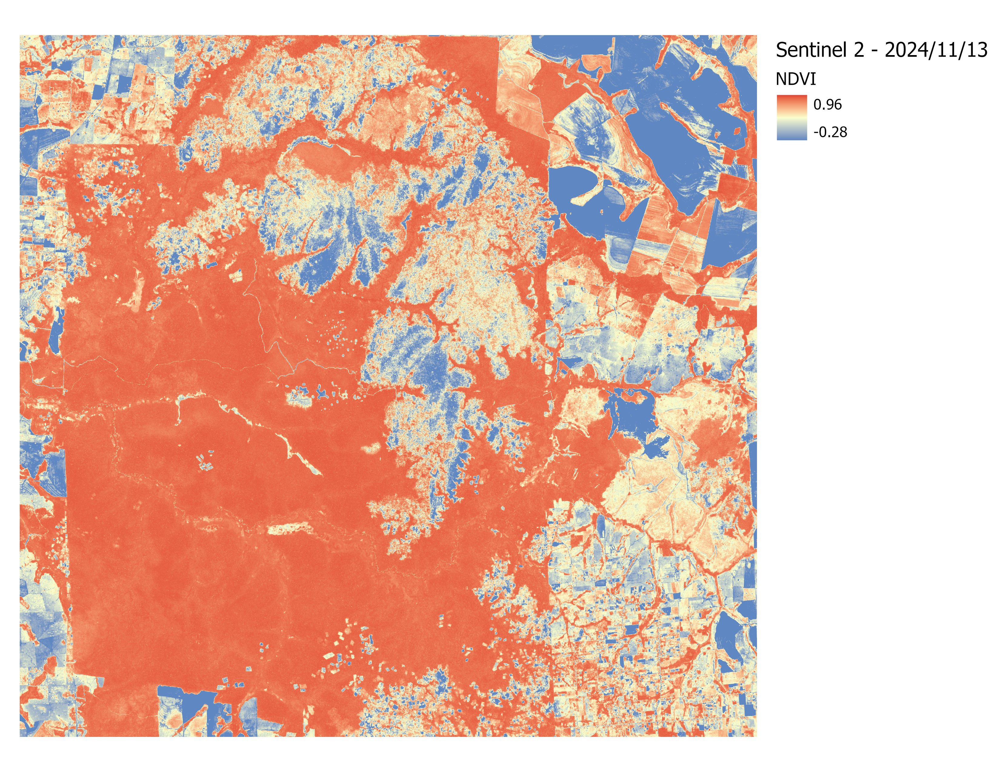
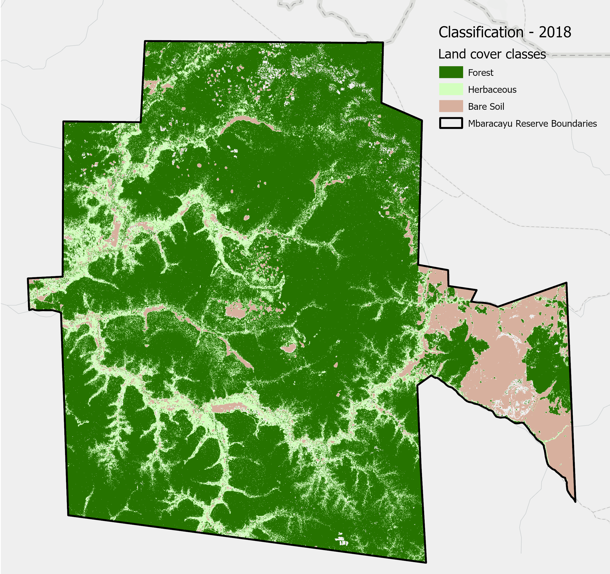
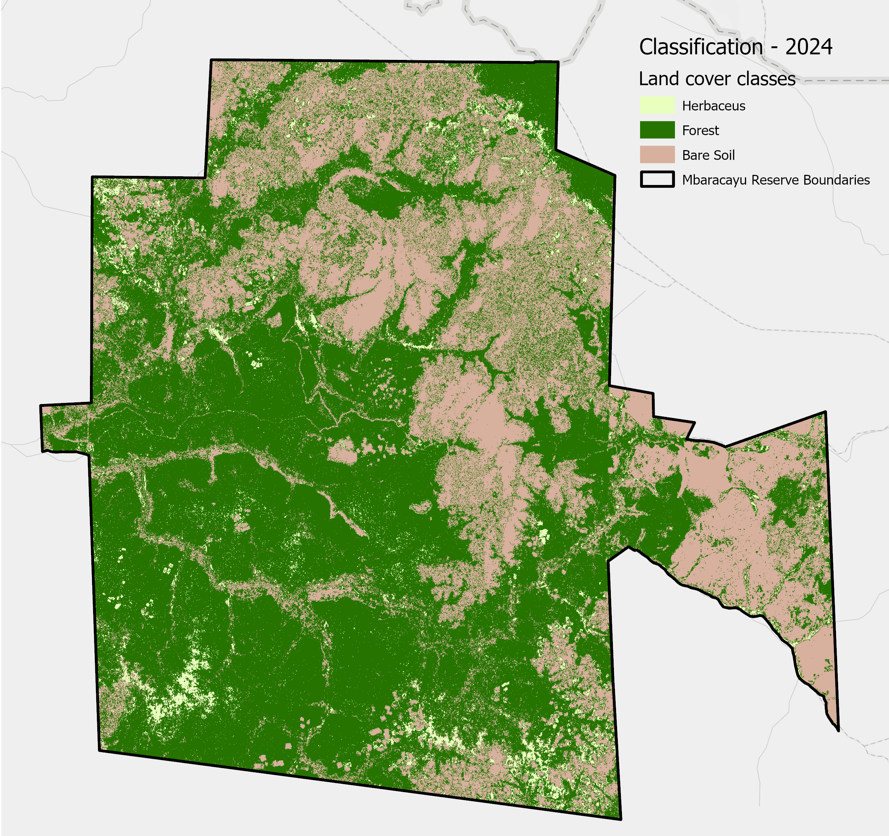

Data
Sentinel 2B
The two periods to consider were 2018 and 2024. The images were classified using IsoData Unsupervised Classification. This method helped with the difficulty of differentiating between bare soil and burned areas, which difficulted a supervised classification approach. To aid in classification, NIR, NDVI, and RGB bands were used for analysis. Both images were obtained from Google Earth Engine and are provided by the Sentinel S2A sensor:
| 2018 | 2024 |
|---|---|
 |
 |
 |
 |
 |
 |
Classification results
A total of N = 50 ground truth points were used for 2018 and 2024, and N = 56 points for 2025.
| Year | Overall Accuracy | Kappa Coefficient |
|---|---|---|
| 2018 | 84 % | 0.752 |
| 2024 | 82% | 0.660 |
| 2018 Classification | 2024 Classification |
|---|---|
 |
 |
Total change detected below:
| Change type | Area in hectares |
|---|---|
| Herbaceus->Forest | 8209.07 |
| Herbaceus->Bare Soil | 2440.67 |
| Forest->Herbaceus | 1912.03 |
| Forest->Bare Soil | 17183.76 |
| Bare Soil->Herbaceus | 219.75 |
| Bare Soil->Forest | 1010.59 |
| Other | 2710.58 |
| No Change | 38016.86 |